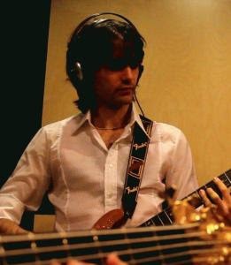

Luciano Ciamarone

I'm a multidisciplinary creator working at the crossroads of music, technology, and engineering. With a background in Physics and Music Technology, my work spans from developing satellite systems and control software in the aerospace and fusion energy sectors, to crafting immersive, interactive audio-visual experiences.
Over the years, I’ve designed custom pitch detection algorithms, real-time audio analysis tools, and augmented instruments, bringing together creativity, signal processing, and embedded systems. I’m especially drawn to spatialization, physical modeling, and the emotional potential of sound.
Whether it's through research, composition, or hands-on projects, my aim is to create experiences that invite people to listen, touch, and engage on a deeper level. I thrive in interdisciplinary spaces where curiosity leads the way and boundaries between art and technology blur.
Links
Together with Dora Motèque, we founded the artistic duo Perceptrum.